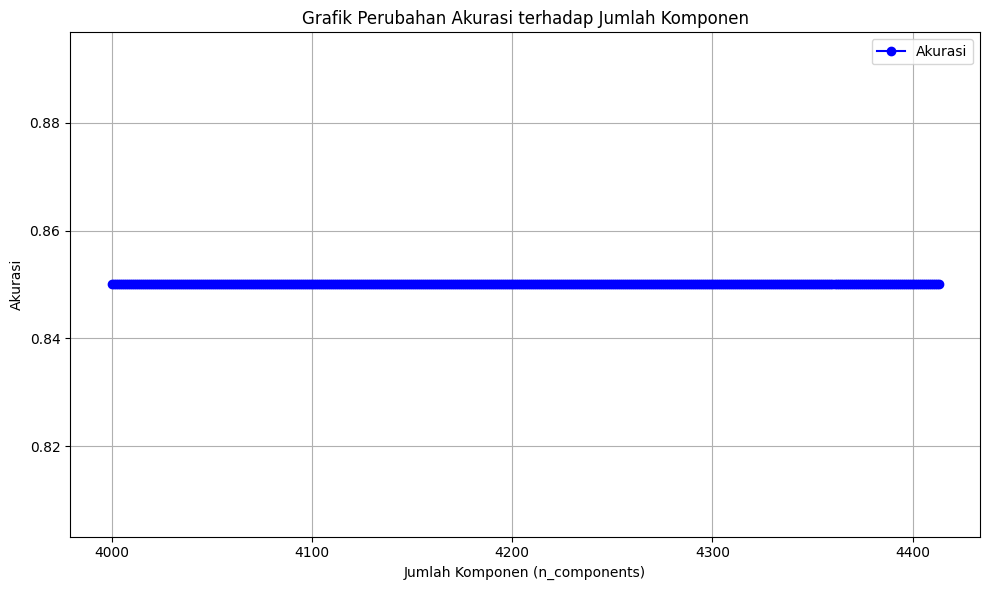
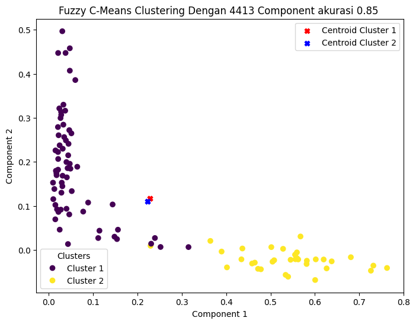
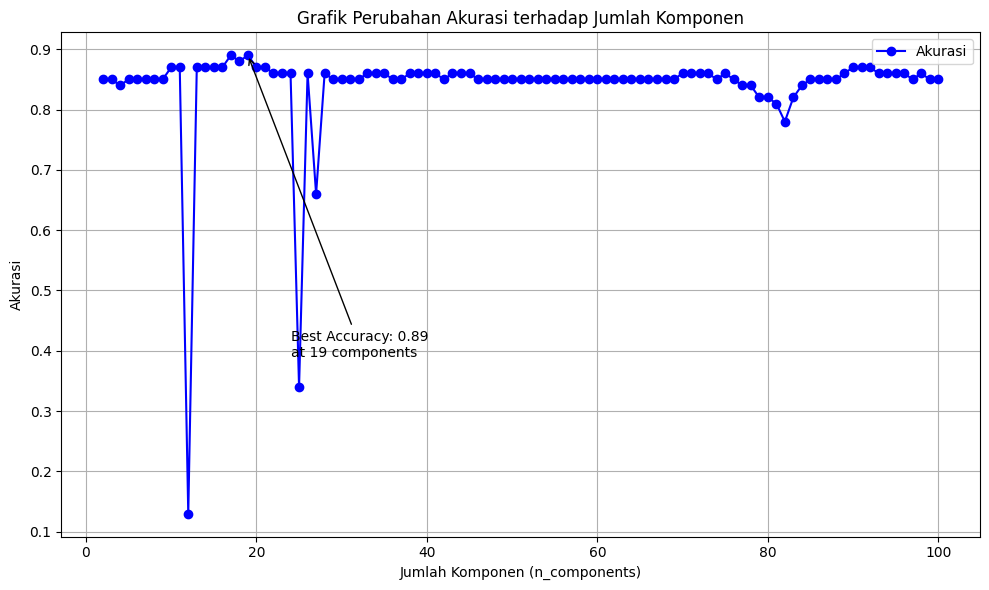
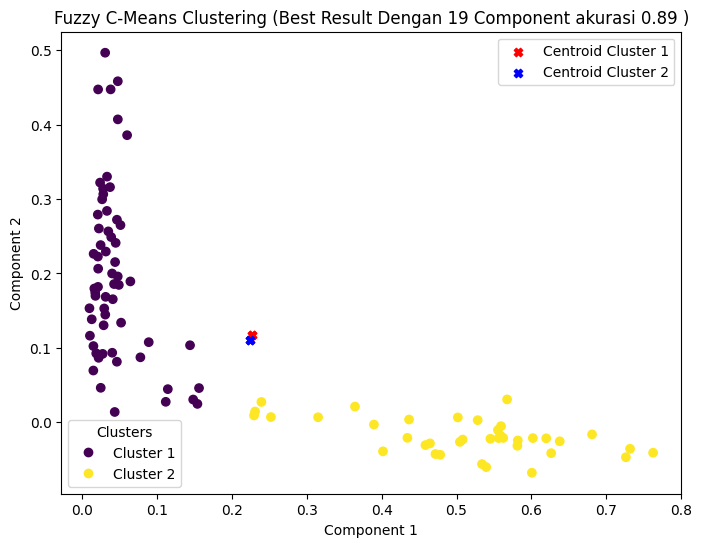

Part 7. Fuzzy C-Means Clustering#
NAMA : RAHMA NURHALIZA
NIM : 210411100176
from google.colab import drive
drive.mount('/content/drive')
---------------------------------------------------------------------------
KeyboardInterrupt Traceback (most recent call last)
<ipython-input-1-d5df0069828e> in <cell line: 2>()
1 from google.colab import drive
----> 2 drive.mount('/content/drive')
/usr/local/lib/python3.10/dist-packages/google/colab/drive.py in mount(mountpoint, force_remount, timeout_ms, readonly)
98 def mount(mountpoint, force_remount=False, timeout_ms=120000, readonly=False):
99 """Mount your Google Drive at the specified mountpoint path."""
--> 100 return _mount(
101 mountpoint,
102 force_remount=force_remount,
/usr/local/lib/python3.10/dist-packages/google/colab/drive.py in _mount(mountpoint, force_remount, timeout_ms, ephemeral, readonly)
135 )
136 if ephemeral:
--> 137 _message.blocking_request(
138 'request_auth',
139 request={'authType': 'dfs_ephemeral'},
/usr/local/lib/python3.10/dist-packages/google/colab/_message.py in blocking_request(request_type, request, timeout_sec, parent)
174 request_type, request, parent=parent, expect_reply=True
175 )
--> 176 return read_reply_from_input(request_id, timeout_sec)
/usr/local/lib/python3.10/dist-packages/google/colab/_message.py in read_reply_from_input(message_id, timeout_sec)
94 reply = _read_next_input_message()
95 if reply == _NOT_READY or not isinstance(reply, dict):
---> 96 time.sleep(0.025)
97 continue
98 if (
KeyboardInterrupt:
import pandas as pd
df = pd.read_csv("/content/drive/MyDrive/PPW/tugas/preprocessing-cnnnews.csv")
df.head()
| judul | isi | tanggal | kategori | berita_clean | case_folding | tokenize | stopword_removal | |
|---|---|---|---|---|---|---|---|---|
| 0 | Jokowi Groundbreaking 2 Investasi Asing di IKN... | Presiden Joko Widodo (Jokowi) dijadwalkan mela... | Selasa, 10 Sep 2024 20:02 WIB | Ekonomi | Presiden Joko Widodo Jokowi dijadwalkan melaku... | presiden joko widodo jokowi dijadwalkan melaku... | ['presiden', 'joko', 'widodo', 'jokowi', 'dija... | presiden joko widodo jokowi dijadwalkan peleta... |
| 1 | Amran Copot Direktur Diduga Calo Pengadaan Bar... | Menteri Pertanian Andi Amran Sulaiman mencopot... | Selasa, 10 Sep 2024 19:11 WIB | Ekonomi | Menteri Pertanian Andi Amran Sulaiman mencopot... | menteri pertanian andi amran sulaiman mencopot... | ['menteri', 'pertanian', 'andi', 'amran', 'sul... | menteri pertanian andi amran sulaiman mencopot... |
| 2 | Bahlil Bicara Pasokan Listrik di Tengah Rencan... | Menteri Energi dan Sumber Daya Mineral (ESDM) ... | Selasa, 10 Sep 2024 18:32 WIB | Ekonomi | Menteri Energi dan Sumber Daya Mineral ESDM Ba... | menteri energi dan sumber daya mineral esdm ba... | ['menteri', 'energi', 'dan', 'sumber', 'daya',... | menteri energi sumber daya mineral esdm bahlil... |
| 3 | Pertamina Kaji Ubah Minyak Jelantah Jadi Avtur | PT Pertamina (Persero) mengkaji pengembangan b... | Selasa, 10 Sep 2024 17:43 WIB | Ekonomi | PT Pertamina Persero mengkaji pengembangan bah... | pt pertamina persero mengkaji pengembangan bah... | ['pt', 'pertamina', 'persero', 'mengkaji', 'pe... | pt pertamina persero mengkaji pengembangan bah... |
| 4 | Dukung PMI, Bank Mandiri Perluas Akses Livin' ... | Bank Mandiri menghadirkan program Livin' Aroun... | Selasa, 10 Sep 2024 17:18 WIB | Ekonomi | Bank Mandiri menghadirkan program Livin Around... | bank mandiri menghadirkan program livin around... | ['bank', 'mandiri', 'menghadirkan', 'program',... | bank mandiri menghadirkan program livin around... |
TFIDF#
from sklearn.feature_extraction.text import TfidfVectorizer
# Menginisialisasi TfidfVectorizer
vectorizer = TfidfVectorizer()
# Menghitung TF-IDF
tfidf_matrix = vectorizer.fit_transform(df['stopword_removal'])
tfidf_matrix.shape
(100, 4413)
!pip install scikit-fuzzy
Collecting scikit-fuzzy
Downloading scikit_fuzzy-0.5.0-py2.py3-none-any.whl.metadata (2.6 kB)
Downloading scikit_fuzzy-0.5.0-py2.py3-none-any.whl (920 kB)
?25l ━━━━━━━━━━━━━━━━━━━━━━━━━━━━━━━━━━━━━━━━ 0.0/920.8 kB ? eta -:--:--
━━━━━━━━━━━╺━━━━━━━━━━━━━━━━━━━━━━━━━━━━ 256.0/920.8 kB 7.5 MB/s eta 0:00:01
━━━━━━━━━━━━━━━━━━━━━━━━━━━━━━━━━━━━━━━━ 920.8/920.8 kB 14.0 MB/s eta 0:00:00
?25hInstalling collected packages: scikit-fuzzy
Successfully installed scikit-fuzzy-0.5.0
import pandas as pd
import numpy as np
import matplotlib.pyplot as plt
from sklearn.feature_extraction.text import TfidfVectorizer
from sklearn.metrics import accuracy_score
from skfuzzy.cluster import cmeans
from sklearn.decomposition import TruncatedSVD
# Mapping label string ke integer (Ekonomi -> 0, Olahraga -> 1)
df['kategori'] = df['kategori'].map({'Ekonomi': 0, 'Olahraga': 1})
true_labels = df['kategori'].values
Mengurangi Dimensi Menggunakan SVD#
Pengurangan komponen 1 per satu (mencari akurasi terbaik dari 4413 komponen hingga 4000 komponen)#
import numpy as np
from sklearn.decomposition import TruncatedSVD
from sklearn.metrics import accuracy_score
from skfuzzy.cluster import cmeans
results = [] # List untuk menyimpan informasi hasil dari setiap iterasi (jumlah komponen, akurasi, label cluster, centroid).
num_components_list = [] # Menyimpan jumlah komponen yang digunakan dalam setiap iterasi.
accuracy_list = [] #Menyimpan nilai akurasi dari setiap iterasi.
for num_components in range(4413,3999, -1):
# Mengurangi dimensi menggunakan SVD
svd = TruncatedSVD(n_components=num_components, random_state=42)
tfidf_reduced = svd.fit_transform(tfidf_matrix) #hasil dari reduksi
# Transpose data agar sesuai dengan input skfuzzy (cmeans mengharapkan data dalam bentuk [fitur(baris), sampel(data)])
data = tfidf_reduced.T
# Fuzzy C-Means clustering menggunakan skfuzzy
cntr, u, u0, d, jm, p, fpc = cmeans(
data, # Data input
c=2, # Jumlah cluster
m=2, # Parameter fuzziness
error=0.005, # Toleransi error
maxiter=200, # Iterasi maksimum
seed=42 # Seed untuk random state
)
# Predict labels berdasarkan derajat keanggotaan maksimum
labels = np.argmax(u, axis=0)
# Evaluasi menggunakan akurasi
accuracy = accuracy_score(true_labels, labels)
results.append({
"num_components": num_components,
"accuracy": accuracy,
"labels": labels,
"centroids": cntr # Menyimpan centroid dari FCM
})
num_components_list.append(num_components)
accuracy_list.append(accuracy)
print(f"Komponen: {num_components}, Accuracy: {accuracy}")
Komponen: 4413, Accuracy: 0.85
Komponen: 4412, Accuracy: 0.85
Komponen: 4411, Accuracy: 0.85
Komponen: 4410, Accuracy: 0.85
Komponen: 4409, Accuracy: 0.85
Komponen: 4408, Accuracy: 0.85
Komponen: 4407, Accuracy: 0.85
Komponen: 4406, Accuracy: 0.85
Komponen: 4405, Accuracy: 0.85
Komponen: 4404, Accuracy: 0.85
Komponen: 4403, Accuracy: 0.85
Komponen: 4402, Accuracy: 0.85
Komponen: 4401, Accuracy: 0.85
Komponen: 4400, Accuracy: 0.85
Komponen: 4399, Accuracy: 0.85
Komponen: 4398, Accuracy: 0.85
Komponen: 4397, Accuracy: 0.85
Komponen: 4396, Accuracy: 0.85
Komponen: 4395, Accuracy: 0.85
Komponen: 4394, Accuracy: 0.85
Komponen: 4393, Accuracy: 0.85
Komponen: 4392, Accuracy: 0.85
Komponen: 4391, Accuracy: 0.85
Komponen: 4390, Accuracy: 0.85
Komponen: 4389, Accuracy: 0.85
Komponen: 4388, Accuracy: 0.85
Komponen: 4387, Accuracy: 0.85
Komponen: 4386, Accuracy: 0.85
Komponen: 4385, Accuracy: 0.85
Komponen: 4384, Accuracy: 0.85
Komponen: 4383, Accuracy: 0.85
Komponen: 4382, Accuracy: 0.85
Komponen: 4381, Accuracy: 0.85
Komponen: 4380, Accuracy: 0.85
Komponen: 4379, Accuracy: 0.85
Komponen: 4378, Accuracy: 0.85
Komponen: 4377, Accuracy: 0.85
Komponen: 4376, Accuracy: 0.85
Komponen: 4375, Accuracy: 0.85
Komponen: 4374, Accuracy: 0.85
Komponen: 4373, Accuracy: 0.85
Komponen: 4372, Accuracy: 0.85
Komponen: 4371, Accuracy: 0.85
Komponen: 4370, Accuracy: 0.85
Komponen: 4369, Accuracy: 0.85
Komponen: 4368, Accuracy: 0.85
Komponen: 4367, Accuracy: 0.85
Komponen: 4366, Accuracy: 0.85
Komponen: 4365, Accuracy: 0.85
Komponen: 4364, Accuracy: 0.85
Komponen: 4363, Accuracy: 0.85
Komponen: 4362, Accuracy: 0.85
Komponen: 4361, Accuracy: 0.85
Komponen: 4360, Accuracy: 0.85
Komponen: 4359, Accuracy: 0.85
Komponen: 4358, Accuracy: 0.85
Komponen: 4357, Accuracy: 0.85
Komponen: 4356, Accuracy: 0.85
Komponen: 4355, Accuracy: 0.85
Komponen: 4354, Accuracy: 0.85
Komponen: 4353, Accuracy: 0.85
Komponen: 4352, Accuracy: 0.85
Komponen: 4351, Accuracy: 0.85
Komponen: 4350, Accuracy: 0.85
Komponen: 4349, Accuracy: 0.85
Komponen: 4348, Accuracy: 0.85
Komponen: 4347, Accuracy: 0.85
Komponen: 4346, Accuracy: 0.85
Komponen: 4345, Accuracy: 0.85
Komponen: 4344, Accuracy: 0.85
Komponen: 4343, Accuracy: 0.85
Komponen: 4342, Accuracy: 0.85
Komponen: 4341, Accuracy: 0.85
Komponen: 4340, Accuracy: 0.85
Komponen: 4339, Accuracy: 0.85
Komponen: 4338, Accuracy: 0.85
Komponen: 4337, Accuracy: 0.85
Komponen: 4336, Accuracy: 0.85
Komponen: 4335, Accuracy: 0.85
Komponen: 4334, Accuracy: 0.85
Komponen: 4333, Accuracy: 0.85
Komponen: 4332, Accuracy: 0.85
Komponen: 4331, Accuracy: 0.85
Komponen: 4330, Accuracy: 0.85
Komponen: 4329, Accuracy: 0.85
Komponen: 4328, Accuracy: 0.85
Komponen: 4327, Accuracy: 0.85
Komponen: 4326, Accuracy: 0.85
Komponen: 4325, Accuracy: 0.85
Komponen: 4324, Accuracy: 0.85
Komponen: 4323, Accuracy: 0.85
Komponen: 4322, Accuracy: 0.85
Komponen: 4321, Accuracy: 0.85
Komponen: 4320, Accuracy: 0.85
Komponen: 4319, Accuracy: 0.85
Komponen: 4318, Accuracy: 0.85
Komponen: 4317, Accuracy: 0.85
Komponen: 4316, Accuracy: 0.85
Komponen: 4315, Accuracy: 0.85
Komponen: 4314, Accuracy: 0.85
Komponen: 4313, Accuracy: 0.85
Komponen: 4312, Accuracy: 0.85
Komponen: 4311, Accuracy: 0.85
Komponen: 4310, Accuracy: 0.85
Komponen: 4309, Accuracy: 0.85
Komponen: 4308, Accuracy: 0.85
Komponen: 4307, Accuracy: 0.85
Komponen: 4306, Accuracy: 0.85
Komponen: 4305, Accuracy: 0.85
Komponen: 4304, Accuracy: 0.85
Komponen: 4303, Accuracy: 0.85
Komponen: 4302, Accuracy: 0.85
Komponen: 4301, Accuracy: 0.85
Komponen: 4300, Accuracy: 0.85
Komponen: 4299, Accuracy: 0.85
Komponen: 4298, Accuracy: 0.85
Komponen: 4297, Accuracy: 0.85
Komponen: 4296, Accuracy: 0.85
Komponen: 4295, Accuracy: 0.85
Komponen: 4294, Accuracy: 0.85
Komponen: 4293, Accuracy: 0.85
Komponen: 4292, Accuracy: 0.85
Komponen: 4291, Accuracy: 0.85
Komponen: 4290, Accuracy: 0.85
Komponen: 4289, Accuracy: 0.85
Komponen: 4288, Accuracy: 0.85
Komponen: 4287, Accuracy: 0.85
Komponen: 4286, Accuracy: 0.85
Komponen: 4285, Accuracy: 0.85
Komponen: 4284, Accuracy: 0.85
Komponen: 4283, Accuracy: 0.85
Komponen: 4282, Accuracy: 0.85
Komponen: 4281, Accuracy: 0.85
Komponen: 4280, Accuracy: 0.85
Komponen: 4279, Accuracy: 0.85
Komponen: 4278, Accuracy: 0.85
Komponen: 4277, Accuracy: 0.85
Komponen: 4276, Accuracy: 0.85
Komponen: 4275, Accuracy: 0.85
Komponen: 4274, Accuracy: 0.85
Komponen: 4273, Accuracy: 0.85
Komponen: 4272, Accuracy: 0.85
Komponen: 4271, Accuracy: 0.85
Komponen: 4270, Accuracy: 0.85
Komponen: 4269, Accuracy: 0.85
Komponen: 4268, Accuracy: 0.85
Komponen: 4267, Accuracy: 0.85
Komponen: 4266, Accuracy: 0.85
Komponen: 4265, Accuracy: 0.85
Komponen: 4264, Accuracy: 0.85
Komponen: 4263, Accuracy: 0.85
Komponen: 4262, Accuracy: 0.85
Komponen: 4261, Accuracy: 0.85
Komponen: 4260, Accuracy: 0.85
Komponen: 4259, Accuracy: 0.85
Komponen: 4258, Accuracy: 0.85
Komponen: 4257, Accuracy: 0.85
Komponen: 4256, Accuracy: 0.85
Komponen: 4255, Accuracy: 0.85
Komponen: 4254, Accuracy: 0.85
Komponen: 4253, Accuracy: 0.85
Komponen: 4252, Accuracy: 0.85
Komponen: 4251, Accuracy: 0.85
Komponen: 4250, Accuracy: 0.85
Komponen: 4249, Accuracy: 0.85
Komponen: 4248, Accuracy: 0.85
Komponen: 4247, Accuracy: 0.85
Komponen: 4246, Accuracy: 0.85
Komponen: 4245, Accuracy: 0.85
Komponen: 4244, Accuracy: 0.85
Komponen: 4243, Accuracy: 0.85
Komponen: 4242, Accuracy: 0.85
Komponen: 4241, Accuracy: 0.85
Komponen: 4240, Accuracy: 0.85
Komponen: 4239, Accuracy: 0.85
Komponen: 4238, Accuracy: 0.85
Komponen: 4237, Accuracy: 0.85
Komponen: 4236, Accuracy: 0.85
Komponen: 4235, Accuracy: 0.85
Komponen: 4234, Accuracy: 0.85
Komponen: 4233, Accuracy: 0.85
Komponen: 4232, Accuracy: 0.85
Komponen: 4231, Accuracy: 0.85
Komponen: 4230, Accuracy: 0.85
Komponen: 4229, Accuracy: 0.85
Komponen: 4228, Accuracy: 0.85
Komponen: 4227, Accuracy: 0.85
Komponen: 4226, Accuracy: 0.85
Komponen: 4225, Accuracy: 0.85
Komponen: 4224, Accuracy: 0.85
Komponen: 4223, Accuracy: 0.85
Komponen: 4222, Accuracy: 0.85
Komponen: 4221, Accuracy: 0.85
Komponen: 4220, Accuracy: 0.85
Komponen: 4219, Accuracy: 0.85
Komponen: 4218, Accuracy: 0.85
Komponen: 4217, Accuracy: 0.85
Komponen: 4216, Accuracy: 0.85
Komponen: 4215, Accuracy: 0.85
Komponen: 4214, Accuracy: 0.85
Komponen: 4213, Accuracy: 0.85
Komponen: 4212, Accuracy: 0.85
Komponen: 4211, Accuracy: 0.85
Komponen: 4210, Accuracy: 0.85
Komponen: 4209, Accuracy: 0.85
Komponen: 4208, Accuracy: 0.85
Komponen: 4207, Accuracy: 0.85
Komponen: 4206, Accuracy: 0.85
Komponen: 4205, Accuracy: 0.85
Komponen: 4204, Accuracy: 0.85
Komponen: 4203, Accuracy: 0.85
Komponen: 4202, Accuracy: 0.85
Komponen: 4201, Accuracy: 0.85
Komponen: 4200, Accuracy: 0.85
Komponen: 4199, Accuracy: 0.85
Komponen: 4198, Accuracy: 0.85
Komponen: 4197, Accuracy: 0.85
Komponen: 4196, Accuracy: 0.85
Komponen: 4195, Accuracy: 0.85
Komponen: 4194, Accuracy: 0.85
Komponen: 4193, Accuracy: 0.85
Komponen: 4192, Accuracy: 0.85
Komponen: 4191, Accuracy: 0.85
Komponen: 4190, Accuracy: 0.85
Komponen: 4189, Accuracy: 0.85
Komponen: 4188, Accuracy: 0.85
Komponen: 4187, Accuracy: 0.85
Komponen: 4186, Accuracy: 0.85
Komponen: 4185, Accuracy: 0.85
Komponen: 4184, Accuracy: 0.85
Komponen: 4183, Accuracy: 0.85
Komponen: 4182, Accuracy: 0.85
Komponen: 4181, Accuracy: 0.85
Komponen: 4180, Accuracy: 0.85
Komponen: 4179, Accuracy: 0.85
Komponen: 4178, Accuracy: 0.85
Komponen: 4177, Accuracy: 0.85
Komponen: 4176, Accuracy: 0.85
Komponen: 4175, Accuracy: 0.85
Komponen: 4174, Accuracy: 0.85
Komponen: 4173, Accuracy: 0.85
Komponen: 4172, Accuracy: 0.85
Komponen: 4171, Accuracy: 0.85
Komponen: 4170, Accuracy: 0.85
Komponen: 4169, Accuracy: 0.85
Komponen: 4168, Accuracy: 0.85
Komponen: 4167, Accuracy: 0.85
Komponen: 4166, Accuracy: 0.85
Komponen: 4165, Accuracy: 0.85
Komponen: 4164, Accuracy: 0.85
Komponen: 4163, Accuracy: 0.85
Komponen: 4162, Accuracy: 0.85
Komponen: 4161, Accuracy: 0.85
Komponen: 4160, Accuracy: 0.85
Komponen: 4159, Accuracy: 0.85
Komponen: 4158, Accuracy: 0.85
Komponen: 4157, Accuracy: 0.85
Komponen: 4156, Accuracy: 0.85
Komponen: 4155, Accuracy: 0.85
Komponen: 4154, Accuracy: 0.85
Komponen: 4153, Accuracy: 0.85
Komponen: 4152, Accuracy: 0.85
Komponen: 4151, Accuracy: 0.85
Komponen: 4150, Accuracy: 0.85
Komponen: 4149, Accuracy: 0.85
Komponen: 4148, Accuracy: 0.85
Komponen: 4147, Accuracy: 0.85
Komponen: 4146, Accuracy: 0.85
Komponen: 4145, Accuracy: 0.85
Komponen: 4144, Accuracy: 0.85
Komponen: 4143, Accuracy: 0.85
Komponen: 4142, Accuracy: 0.85
Komponen: 4141, Accuracy: 0.85
Komponen: 4140, Accuracy: 0.85
Komponen: 4139, Accuracy: 0.85
Komponen: 4138, Accuracy: 0.85
Komponen: 4137, Accuracy: 0.85
Komponen: 4136, Accuracy: 0.85
Komponen: 4135, Accuracy: 0.85
Komponen: 4134, Accuracy: 0.85
Komponen: 4133, Accuracy: 0.85
Komponen: 4132, Accuracy: 0.85
Komponen: 4131, Accuracy: 0.85
Komponen: 4130, Accuracy: 0.85
Komponen: 4129, Accuracy: 0.85
Komponen: 4128, Accuracy: 0.85
Komponen: 4127, Accuracy: 0.85
Komponen: 4126, Accuracy: 0.85
Komponen: 4125, Accuracy: 0.85
Komponen: 4124, Accuracy: 0.85
Komponen: 4123, Accuracy: 0.85
Komponen: 4122, Accuracy: 0.85
Komponen: 4121, Accuracy: 0.85
Komponen: 4120, Accuracy: 0.85
Komponen: 4119, Accuracy: 0.85
Komponen: 4118, Accuracy: 0.85
Komponen: 4117, Accuracy: 0.85
Komponen: 4116, Accuracy: 0.85
Komponen: 4115, Accuracy: 0.85
Komponen: 4114, Accuracy: 0.85
Komponen: 4113, Accuracy: 0.85
Komponen: 4112, Accuracy: 0.85
Komponen: 4111, Accuracy: 0.85
Komponen: 4110, Accuracy: 0.85
Komponen: 4109, Accuracy: 0.85
Komponen: 4108, Accuracy: 0.85
Komponen: 4107, Accuracy: 0.85
Komponen: 4106, Accuracy: 0.85
Komponen: 4105, Accuracy: 0.85
Komponen: 4104, Accuracy: 0.85
Komponen: 4103, Accuracy: 0.85
Komponen: 4102, Accuracy: 0.85
Komponen: 4101, Accuracy: 0.85
Komponen: 4100, Accuracy: 0.85
Komponen: 4099, Accuracy: 0.85
Komponen: 4098, Accuracy: 0.85
Komponen: 4097, Accuracy: 0.85
Komponen: 4096, Accuracy: 0.85
Komponen: 4095, Accuracy: 0.85
Komponen: 4094, Accuracy: 0.85
Komponen: 4093, Accuracy: 0.85
Komponen: 4092, Accuracy: 0.85
Komponen: 4091, Accuracy: 0.85
Komponen: 4090, Accuracy: 0.85
Komponen: 4089, Accuracy: 0.85
Komponen: 4088, Accuracy: 0.85
Komponen: 4087, Accuracy: 0.85
Komponen: 4086, Accuracy: 0.85
Komponen: 4085, Accuracy: 0.85
Komponen: 4084, Accuracy: 0.85
Komponen: 4083, Accuracy: 0.85
Komponen: 4082, Accuracy: 0.85
Komponen: 4081, Accuracy: 0.85
Komponen: 4080, Accuracy: 0.85
Komponen: 4079, Accuracy: 0.85
Komponen: 4078, Accuracy: 0.85
Komponen: 4077, Accuracy: 0.85
Komponen: 4076, Accuracy: 0.85
Komponen: 4075, Accuracy: 0.85
Komponen: 4074, Accuracy: 0.85
Komponen: 4073, Accuracy: 0.85
Komponen: 4072, Accuracy: 0.85
Komponen: 4071, Accuracy: 0.85
Komponen: 4070, Accuracy: 0.85
Komponen: 4069, Accuracy: 0.85
Komponen: 4068, Accuracy: 0.85
Komponen: 4067, Accuracy: 0.85
Komponen: 4066, Accuracy: 0.85
Komponen: 4065, Accuracy: 0.85
Komponen: 4064, Accuracy: 0.85
Komponen: 4063, Accuracy: 0.85
Komponen: 4062, Accuracy: 0.85
Komponen: 4061, Accuracy: 0.85
Komponen: 4060, Accuracy: 0.85
Komponen: 4059, Accuracy: 0.85
Komponen: 4058, Accuracy: 0.85
Komponen: 4057, Accuracy: 0.85
Komponen: 4056, Accuracy: 0.85
Komponen: 4055, Accuracy: 0.85
Komponen: 4054, Accuracy: 0.85
Komponen: 4053, Accuracy: 0.85
Komponen: 4052, Accuracy: 0.85
Komponen: 4051, Accuracy: 0.85
Komponen: 4050, Accuracy: 0.85
Komponen: 4049, Accuracy: 0.85
Komponen: 4048, Accuracy: 0.85
Komponen: 4047, Accuracy: 0.85
Komponen: 4046, Accuracy: 0.85
Komponen: 4045, Accuracy: 0.85
Komponen: 4044, Accuracy: 0.85
Komponen: 4043, Accuracy: 0.85
Komponen: 4042, Accuracy: 0.85
Komponen: 4041, Accuracy: 0.85
Komponen: 4040, Accuracy: 0.85
Komponen: 4039, Accuracy: 0.85
Komponen: 4038, Accuracy: 0.85
Komponen: 4037, Accuracy: 0.85
Komponen: 4036, Accuracy: 0.85
Komponen: 4035, Accuracy: 0.85
Komponen: 4034, Accuracy: 0.85
Komponen: 4033, Accuracy: 0.85
Komponen: 4032, Accuracy: 0.85
Komponen: 4031, Accuracy: 0.85
Komponen: 4030, Accuracy: 0.85
Komponen: 4029, Accuracy: 0.85
Komponen: 4028, Accuracy: 0.85
Komponen: 4027, Accuracy: 0.85
Komponen: 4026, Accuracy: 0.85
Komponen: 4025, Accuracy: 0.85
Komponen: 4024, Accuracy: 0.85
Komponen: 4023, Accuracy: 0.85
Komponen: 4022, Accuracy: 0.85
Komponen: 4021, Accuracy: 0.85
Komponen: 4020, Accuracy: 0.85
Komponen: 4019, Accuracy: 0.85
Komponen: 4018, Accuracy: 0.85
Komponen: 4017, Accuracy: 0.85
Komponen: 4016, Accuracy: 0.85
Komponen: 4015, Accuracy: 0.85
Komponen: 4014, Accuracy: 0.85
Komponen: 4013, Accuracy: 0.85
Komponen: 4012, Accuracy: 0.85
Komponen: 4011, Accuracy: 0.85
Komponen: 4010, Accuracy: 0.85
Komponen: 4009, Accuracy: 0.85
Komponen: 4008, Accuracy: 0.85
Komponen: 4007, Accuracy: 0.85
Komponen: 4006, Accuracy: 0.85
Komponen: 4005, Accuracy: 0.85
Komponen: 4004, Accuracy: 0.85
Komponen: 4003, Accuracy: 0.85
Komponen: 4002, Accuracy: 0.85
Komponen: 4001, Accuracy: 0.85
Komponen: 4000, Accuracy: 0.85
Menampilkan Grafik#
best_accuracy = max(accuracy_list)
best_index = accuracy_list.index(best_accuracy)
best_num_components = num_components_list[best_index]
# Membuat grafik garis untuk akurasi vs jumlah komponen
plt.figure(figsize=(10, 6))
plt.plot(num_components_list, accuracy_list, marker='o', color='b', label='Akurasi')
plt.title("Grafik Perubahan Akurasi terhadap Jumlah Komponen")
plt.xlabel("Jumlah Komponen (n_components)")
plt.ylabel("Akurasi")
plt.grid(True)
plt.legend(loc='best')
#Menambahkan anotasi untuk best accuracy
#plt.annotate(
#f'Best Accuracy: {best_accuracy:.2f}\nat {best_num_components} components',
#xy=(best_num_components, best_accuracy), # Koordinat posisi (x, y)
#xytext=(best_num_components + 5, best_accuracy - 0.005), # Posisi teks (di sebelah kanan atas titik)
#arrowprops=dict(facecolor='black', arrowstyle='->'), # Menambahkan panah
#fontsize=10,
#color='black'
#)
#plt.xticks(ticks=range(min(num_components_list), max(num_components_list) + 1, 10))
plt.tight_layout()
# Simpan grafik sebagai file jika diperlukan
plt.savefig("grafik4413.png")
# Tampilkan grafik
plt.show()

Menampilkan plot dengan 4413 komponen#
# Menampilkan hasil scatter plot untuk komponen terbaik
best_result = max(results, key=lambda x: x["accuracy"])
best_labels = best_result["labels"]
best_centroids = best_result["centroids"]
best_num_components = best_result["num_components"]
best_accuracy = best_result["accuracy"]
# Mengurangi dimensi untuk komponen terbaik
svd_best = TruncatedSVD(n_components=best_num_components)
tfidf_best_reduced = svd_best.fit_transform(tfidf_matrix)
# Scatter plot hasil clustering
plt.figure(figsize=(8, 6))
scatter = plt.scatter(tfidf_best_reduced[:, 0], tfidf_best_reduced[:, 1], c=best_labels, cmap='viridis', marker='o')
# Menambahkan centroid ke plot dengan sedikit pergeseran
shift_delta = 0.003 # Variabel untuk menggeser centroid agar tidak tumpang tindih
# Menambahkan centroid ke plot dengan pergeseran sedikit pada posisi centroid
for i in range(best_centroids.shape[0]):
# Menentukan warna berdasarkan cluster
color = 'red' if i == 0 else 'blue' # Misalnya centroid cluster 1 merah, cluster 2 biru
# Menggeser posisi centroid agar tidak tumpang tindih
shift_x = best_centroids[i, 0] + (shift_delta if i == 0 else -shift_delta)
shift_y = best_centroids[i, 1] + (shift_delta if i == 0 else -shift_delta)
# Plot centroid yang telah digeser
plt.scatter(shift_x, shift_y, c=color, marker='X')
# Menambahkan legenda untuk warna scatter (Cluster)
handles, _ = scatter.legend_elements(prop="colors") # Ambil elemen warna dari scatter
legend_labels = [f'Cluster {i + 1}' for i in range(len(np.unique(best_labels)))]
cluster_legend = plt.legend(handles, legend_labels, title="Clusters", loc='lower left')
# Menambahkan legenda untuk centroids
plt.scatter(best_centroids[0, 0] + shift_delta, best_centroids[0, 1] + shift_delta, c='red', marker='X', label='Centroid Cluster 1')
plt.scatter(best_centroids[1, 0] - shift_delta, best_centroids[1, 1] - shift_delta, c='blue', marker='X', label='Centroid Cluster 2')
plt.gca().add_artist(cluster_legend) # Tambahkan kembali legenda cluster agar tidak tertimpa
plt.title(f'Fuzzy C-Means Clustering Dengan 4413 Component akurasi {best_accuracy} ')
plt.xlabel('Component 1')
plt.ylabel('Component 2')
# Menampilkan legenda
plt.legend(loc='best')
# Menyimpan gambar plot sebagai file PNG
plt.savefig('plot4413.png', dpi=300, bbox_inches='tight')
plt.show()

Distribusi Kategori Dalam cluster#
df['cluster'] = best_labels
# Distribusi kategori dalam Cluster 1
cluster_1_dist = df[df['cluster'] == 0]['kategori'].value_counts().reset_index()
cluster_1_dist.columns = ['Kategori', 'Jumlah']
# Distribusi kategori dalam Cluster 2
cluster_2_dist = df[df['cluster'] == 1]['kategori'].value_counts().reset_index()
cluster_2_dist.columns = ['Kategori', 'Jumlah']
print("Distribusi Kategori dalam Cluster 1:")
print(cluster_1_dist)
print("\nDistribusi Kategori dalam Cluster 2:")
print(cluster_2_dist)
# Simpan ke CSV
#cluster_1_dist.to_csv('dis85-cluster1.csv', index=False)
#cluster_2_dist.to_csv('dis85-cluster2.csv', index=False)
Distribusi Kategori dalam Cluster 1:
Kategori Jumlah
0 0 50
1 1 15
Distribusi Kategori dalam Cluster 2:
Kategori Jumlah
0 1 35
Pengurangan komponen 1 per satu ( mencari akurasi terbaik dari 300 komponen hingga 2 komponen)#
import numpy as np
from sklearn.decomposition import TruncatedSVD
from sklearn.metrics import accuracy_score
from skfuzzy.cluster import cmeans
results = []
num_components_list = []
accuracy_list = []
for num_components in range(100,1, -1):
# Mengurangi dimensi menggunakan SVD
svd = TruncatedSVD(n_components=num_components, random_state=42)
tfidf_reduced = svd.fit_transform(tfidf_matrix)
# Transpose data agar sesuai dengan input skfuzzy (cmeans mengharapkan data dalam bentuk [fitur, sampel])
data = tfidf_reduced.T
# Fuzzy C-Means clustering menggunakan skfuzzy
cntr, u, u0, d, jm, p, fpc = cmeans(
data, # Data input
c=2, # Jumlah cluster
m=2, # Parameter fuzziness
error=0.005, # Toleransi error
maxiter=200, # Iterasi maksimum
seed=42 # Seed untuk random state
)
# Predict labels berdasarkan derajat keanggotaan maksimum
labels = np.argmax(u, axis=0)
# Evaluasi menggunakan akurasi
accuracy = accuracy_score(true_labels, labels)
results.append({
"num_components": num_components,
"accuracy": accuracy,
"labels": labels,
"centroids": cntr # Menyimpan centroid dari FCM
})
num_components_list.append(num_components)
accuracy_list.append(accuracy)
print(f"Komponen: {num_components}, Accuracy: {accuracy}")
Komponen: 100, Accuracy: 0.85
Komponen: 99, Accuracy: 0.85
Komponen: 98, Accuracy: 0.86
Komponen: 97, Accuracy: 0.85
Komponen: 96, Accuracy: 0.86
Komponen: 95, Accuracy: 0.86
Komponen: 94, Accuracy: 0.86
Komponen: 93, Accuracy: 0.86
Komponen: 92, Accuracy: 0.87
Komponen: 91, Accuracy: 0.87
Komponen: 90, Accuracy: 0.87
Komponen: 89, Accuracy: 0.86
Komponen: 88, Accuracy: 0.85
Komponen: 87, Accuracy: 0.85
Komponen: 86, Accuracy: 0.85
Komponen: 85, Accuracy: 0.85
Komponen: 84, Accuracy: 0.84
Komponen: 83, Accuracy: 0.82
Komponen: 82, Accuracy: 0.78
Komponen: 81, Accuracy: 0.81
Komponen: 80, Accuracy: 0.82
Komponen: 79, Accuracy: 0.82
Komponen: 78, Accuracy: 0.84
Komponen: 77, Accuracy: 0.84
Komponen: 76, Accuracy: 0.85
Komponen: 75, Accuracy: 0.86
Komponen: 74, Accuracy: 0.85
Komponen: 73, Accuracy: 0.86
Komponen: 72, Accuracy: 0.86
Komponen: 71, Accuracy: 0.86
Komponen: 70, Accuracy: 0.86
Komponen: 69, Accuracy: 0.85
Komponen: 68, Accuracy: 0.85
Komponen: 67, Accuracy: 0.85
Komponen: 66, Accuracy: 0.85
Komponen: 65, Accuracy: 0.85
Komponen: 64, Accuracy: 0.85
Komponen: 63, Accuracy: 0.85
Komponen: 62, Accuracy: 0.85
Komponen: 61, Accuracy: 0.85
Komponen: 60, Accuracy: 0.85
Komponen: 59, Accuracy: 0.85
Komponen: 58, Accuracy: 0.85
Komponen: 57, Accuracy: 0.85
Komponen: 56, Accuracy: 0.85
Komponen: 55, Accuracy: 0.85
Komponen: 54, Accuracy: 0.85
Komponen: 53, Accuracy: 0.85
Komponen: 52, Accuracy: 0.85
Komponen: 51, Accuracy: 0.85
Komponen: 50, Accuracy: 0.85
Komponen: 49, Accuracy: 0.85
Komponen: 48, Accuracy: 0.85
Komponen: 47, Accuracy: 0.85
Komponen: 46, Accuracy: 0.85
Komponen: 45, Accuracy: 0.86
Komponen: 44, Accuracy: 0.86
Komponen: 43, Accuracy: 0.86
Komponen: 42, Accuracy: 0.85
Komponen: 41, Accuracy: 0.86
Komponen: 40, Accuracy: 0.86
Komponen: 39, Accuracy: 0.86
Komponen: 38, Accuracy: 0.86
Komponen: 37, Accuracy: 0.85
Komponen: 36, Accuracy: 0.85
Komponen: 35, Accuracy: 0.86
Komponen: 34, Accuracy: 0.86
Komponen: 33, Accuracy: 0.86
Komponen: 32, Accuracy: 0.85
Komponen: 31, Accuracy: 0.85
Komponen: 30, Accuracy: 0.85
Komponen: 29, Accuracy: 0.85
Komponen: 28, Accuracy: 0.86
Komponen: 27, Accuracy: 0.66
Komponen: 26, Accuracy: 0.86
Komponen: 25, Accuracy: 0.34
Komponen: 24, Accuracy: 0.86
Komponen: 23, Accuracy: 0.86
Komponen: 22, Accuracy: 0.86
Komponen: 21, Accuracy: 0.87
Komponen: 20, Accuracy: 0.87
Komponen: 19, Accuracy: 0.89
Komponen: 18, Accuracy: 0.88
Komponen: 17, Accuracy: 0.89
Komponen: 16, Accuracy: 0.87
Komponen: 15, Accuracy: 0.87
Komponen: 14, Accuracy: 0.87
Komponen: 13, Accuracy: 0.87
Komponen: 12, Accuracy: 0.13
Komponen: 11, Accuracy: 0.87
Komponen: 10, Accuracy: 0.87
Komponen: 9, Accuracy: 0.85
Komponen: 8, Accuracy: 0.85
Komponen: 7, Accuracy: 0.85
Komponen: 6, Accuracy: 0.85
Komponen: 5, Accuracy: 0.85
Komponen: 4, Accuracy: 0.84
Komponen: 3, Accuracy: 0.85
Komponen: 2, Accuracy: 0.85
Menampilkan Grafik#
best_accuracy = max(accuracy_list)
best_index = accuracy_list.index(best_accuracy)
best_num_components = num_components_list[best_index]
# Membuat grafik garis untuk akurasi vs jumlah komponen
plt.figure(figsize=(10, 6))
plt.plot(num_components_list, accuracy_list, marker='o', color='b', label='Akurasi')
plt.title("Grafik Perubahan Akurasi terhadap Jumlah Komponen")
plt.xlabel("Jumlah Komponen (n_components)")
plt.ylabel("Akurasi")
plt.grid(True)
plt.legend(loc='best')
#Menambahkan anotasi untuk best accuracy
plt.annotate(
f'Best Accuracy: {best_accuracy:.2f}\nat {best_num_components} components',
xy=(best_num_components, best_accuracy), # Koordinat posisi (x, y)
xytext=(best_num_components + 5, best_accuracy - 0.5), # Posisi teks (di sebelah kanan atas titik)
arrowprops=dict(facecolor='black', arrowstyle='->'), # Menambahkan panah
fontsize=10,
color='black'
)
# Mengatur ticks pada sumbu-x dimulai dari 5, 10, 15, dst.
#plt.xticks(ticks=range(min(num_components_list), max(num_components_list) + 1,5 ))
plt.tight_layout()
# Simpan grafik sebagai file jika diperlukan
plt.savefig("grafik300-2.png")
# Tampilkan grafik
plt.show()

Menampilkan plot setelah svd, berdasarkan pencarian komponen dengan akurasi terbaik#
# Menampilkan hasil scatter plot untuk komponen terbaik
best_result = max(results, key=lambda x: x["accuracy"])
best_labels = best_result["labels"]
best_centroids = best_result["centroids"]
best_num_components = best_result["num_components"]
best_accuracy = best_result["accuracy"]
# Mengurangi dimensi untuk komponen terbaik
svd_best = TruncatedSVD(n_components=best_num_components)
tfidf_best_reduced = svd_best.fit_transform(tfidf_matrix)
# Scatter plot hasil clustering
plt.figure(figsize=(8, 6))
scatter = plt.scatter(tfidf_best_reduced[:, 0], tfidf_best_reduced[:, 1], c=best_labels, cmap='viridis', marker='o')
# Menambahkan centroid ke plot dengan sedikit pergeseran
shift_delta = 0.003 # Variabel untuk menggeser centroid agar tidak tumpang tindih
# Menambahkan centroid ke plot dengan pergeseran sedikit pada posisi centroid
for i in range(best_centroids.shape[0]):
# Menentukan warna berdasarkan cluster
color = 'red' if i == 0 else 'blue' # Misalnya centroid cluster 1 merah, cluster 2 biru
# Menggeser posisi centroid agar tidak tumpang tindih
shift_x = best_centroids[i, 0] + (shift_delta if i == 0 else -shift_delta)
shift_y = best_centroids[i, 1] + (shift_delta if i == 0 else -shift_delta)
# Plot centroid yang telah digeser
plt.scatter(shift_x, shift_y, c=color, marker='X')
# Menambahkan legenda untuk warna scatter (Cluster)
handles, _ = scatter.legend_elements(prop="colors") # Ambil elemen warna dari scatter
legend_labels = [f'Cluster {i + 1}' for i in range(len(np.unique(best_labels)))]
cluster_legend = plt.legend(handles, legend_labels, title="Clusters", loc='lower left')
# Menambahkan legenda untuk centroids
plt.scatter(best_centroids[0, 0] + shift_delta, best_centroids[0, 1] + shift_delta, c='red', marker='X', label='Centroid Cluster 1')
plt.scatter(best_centroids[1, 0] - shift_delta, best_centroids[1, 1] - shift_delta, c='blue', marker='X', label='Centroid Cluster 2')
plt.gca().add_artist(cluster_legend) # Tambahkan kembali legenda cluster agar tidak tertimpa
plt.title(f'Fuzzy C-Means Clustering (Best Result Dengan {best_num_components} Component akurasi {best_accuracy} )')
plt.xlabel('Component 1')
plt.ylabel('Component 2')
# Menampilkan legenda
plt.legend(loc='best')
plt.savefig('plot19.png', dpi=300, bbox_inches='tight')
plt.show()

svd_best = TruncatedSVD(n_components=best_num_components, random_state=42)
tfidf_best_reduced = svd_best.fit_transform(tfidf_matrix)
print(f"Jumlah Komponen Terbaik: {best_num_components}")
print(f"Akurasi: {best_accuracy}")
print(f"Dimensi Data Setelah Reduksi SVD (Komponen Terbaik): {tfidf_best_reduced.shape}")
# Menampilkan isi centroid terbaik
print("Isi Centroid Terbaik:")
print(best_centroids)
Jumlah Komponen Terbaik: 19
Akurasi: 0.89
Dimensi Data Setelah Reduksi SVD (Komponen Terbaik): (100, 19)
Isi Centroid Terbaik:
[[ 0.22451219 0.11403016 0.00741638 0.01840847 0.00925721 -0.01087861
0.0239571 0.01206712 -0.00901117 -0.0006618 0.00523296 0.0107058
0.00023511 -0.00655039 -0.00473033 0.00210321 0.0066023 0.00052728
0.00790842]
[ 0.22736449 0.11291603 0.00733638 0.0181037 0.00923354 -0.01068436
0.0237967 0.01184351 -0.00906301 -0.00098216 0.0052042 0.01069081
0.00036109 -0.00643043 -0.00465767 0.00202415 0.00643368 0.00054862
0.00788758]]
Distribusi Kategori Dalam cluster#
df['cluster'] = best_labels
# Distribusi kategori dalam Cluster 1
cluster_1_dist = df[df['cluster'] == 0]['kategori'].value_counts().reset_index()
cluster_1_dist.columns = ['Kategori', 'Jumlah']
# Distribusi kategori dalam Cluster 2
cluster_2_dist = df[df['cluster'] == 1]['kategori'].value_counts().reset_index()
cluster_2_dist.columns = ['Kategori', 'Jumlah']
print("Distribusi Kategori dalam Cluster 1:")
print(cluster_1_dist)
print("\nDistribusi Kategori dalam Cluster 2:")
print(cluster_2_dist)
# Simpan ke CSV
cluster_1_dist.to_csv('dis89-cluster1.csv', index=False)
cluster_2_dist.to_csv('dis89-cluster2.csv', index=False)
Distribusi Kategori dalam Cluster 1:
Kategori Jumlah
0 0 50
1 1 11
Distribusi Kategori dalam Cluster 2:
Kategori Jumlah
0 1 39